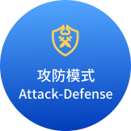

CTF竞赛模式有哪些？
- 参赛队伍在单位时间内以解题数量多少来衡量成绩，题目主要包含逆向、漏洞挖掘与利用、Web渗透、密码、取证、隐写、安全编程等内容。
-  参赛队伍通过挖掘网络服务漏洞并攻击对手获得分数，同时通过修复自身服务漏洞，限制对手得分。
- 参赛队伍通过解题可以获取一些初始分数，然后通过攻防对抗进行得分增减的零和游戏，最终以得分高低分出胜负。
参加CTF竞赛应该具备哪些技能？
- CTF以团队为竞赛单位，要求队员间技术互补，且至少精通一种竞赛题型
- 01
WEB渗透测试
- 02
CRYPTO密码学
- 03
PWN二进制漏洞利用
- 04
REVERSE逆向工程
- 05
MISC杂项流量分析
CTF竞赛题型有哪些？
-
基础知识
竞赛基础知识，以综合解决方案的形式来体现知识内容，涉及数据库基础，网络安全基础、操作系统基础等。
-
MISC
安全杂项，题目涉及流量分析、电子取证、人肉搜索、数据分析、大数据统计等等，覆盖面比较广。
-
PPC
源代码，题目涉及到程序编写、编程算法实现。算法的逆向编写，批量处理等。
-
CRYPTO
密码学，题目考察各种加解密技术，包括古典加密技术、现代加解密技术甚至出题者自创加密技术。
-
PWN
在黑客中代表攻破，取得权限，CTF比赛中代表着溢出类题目，其中常见类型溢出漏洞有栈溢出，堆溢出。
-
REVERSE
逆向工程，涉及到软件逆向、破解技术等，要求有较强的反汇编、反编译扎实功底。
-
WEB
WEB是CTF夺旗竞赛中主要题型，涉及到常见的Web漏洞，诸如注入、XSS、文件包含、代码执行、上传等漏洞。
-
STEGA
隐写术，题目的Flag会隐藏到图片、音频、视频等各类数据载体中供参赛选手获取。
都说CTF竞赛含金量高 究竟难在哪儿？
-
01
CTF竞赛题目综合性强
题型涉及范围广 -
02
CTF竞赛题目灵活性强
解题思路不唯一 -
03
CTF竞赛题目复杂度高
出题者标榜技术 -
04
CTF竞赛题目随意性强
偏题怪题很常见
CTF竞赛想拿高分 该如何备战？
-
提升短板 磨炼杀招
CTF竞赛题型分成5个模块，要求队员至少精通一类模块技术。队伍不能有明显技术短板，根据以往经验坐拥PWN大神，对战得分普遍较高。
赛博提示 培训课程实战模块完整覆盖，讲师乃PWN大神一枚。 -
以赛代练 快速学习
CTF竞赛以实战为导向，需要在日常实战训练中，不断总结和积累，不论是对技术，还是临场应变能力都有极大帮助，特别是对快速学习能力提升效果最为显著。
赛博提示 无论模拟资源还是对战训练，资源多的不要不要的！ -
吸取经验 学习思路
CTF竞赛经过多年的沉淀，有一些解题思路和攻防赛的对抗技巧是可以借鉴的。不仅能极大提升解题赛效率，同时在对战阶段培养学员发散性的解题思路。
赛博提示 讲师经验丰富，我们看重First Blood。 -
多做多练 举一反三
刷过几套题之后，你会发现有些知识点的题目，都有着一些共性。对知识点能扩展的方向做到了然于胸。
赛博提示 不仅有题库，数量还很多，题型很靠谱。
你的CTF团队是否存在这些问题？
-
团队技术落后
队员对于目前主流攻防技术整体不掌握，或在部分技术中处于弱势。
-
队伍技术能力中庸
队员技术基础不错，没有明显短板，但缺乏摧城拔寨的手段。
-

临场应变能力差
缺乏对新知识快速学习能力，理论付诸实践转化能力差。
-
解题思路闭塞
遇到复杂题目或生题时，解题思路呆板，缺乏发散理性的推导能力。
-
解题赛成绩差
知识广度不足，题型变化了解不够，不掌握答题技巧。
-
攻防赛成绩差
攻击缺乏有效的渗透手段，防御没有针对性。
参与CTF竞赛能解决企业哪些根本的问题？
-
01. 产品研发迭代缺乏新技术支撑
利用实战、比赛中经验，研究数据分析，设计AI算法，以及网络安全防御产品。
-
02. 安全团队技术能力不成熟
任何企业都存在未被掌控的安全风险点，只有通过实战不断提升团队技术能力，才能提高漏洞发现门槛。
-
03. 网络安全风险意识薄弱
没有意识到一些行为操作，将给企业带来网络安全风险。只有更多的接触网络攻击手段，才能提高防范意识，不留可乘之机，更有效的保护自己。
-
04. 资金压力大没钱做推广
团队刚成立，论技术有，谈理想也有。踌躇满志做产品，唯独囊中羞涩，没钱推广企业经营步履维艰。
-
05. 洽谈业务时没有过硬技术背书
在国内，安全类技能认证普遍存在“一英里宽一英尺深”情况下，过硬的CTF成绩绝对是优质背书。
-
06. 没有渠道接触优秀安全技术人才
企业通过以往渠道获得优秀安全技术人才，无异于撞大运。并没有稳定可靠的途径。
-
07. 对招聘安全技术人员工作能力不了解
简历呈现完美，面试对答如流，实际工作能力堪忧。
CTF竞赛对个人提升有多大？
-
提升快速学习能力
CTF竞赛试题范围广且灵活多变，需要学员在比赛过程中去学习和实践。对于知识理解速度和理解能力有着极高挑战。
-
提升技术认知水平
CTF竞赛试题难度大复杂程度高，需要从原理上去理解。这对于个人安全技术能力体系的丰富完善有着极大的帮助。
-
提升逻辑思考能力
CTF竞赛不仅节奏快，而且比赛内容复杂程度高。对于知识技术运用极其综合。要求选手时刻保持清晰的判断和高效的分析能力。
-
提升实战解决能力
CTF竞赛其本质是通过一系列技术手段应用，和实际工作中对于网络安全技术发展的思路完全吻合，而技术强度和难度更胜一筹。
-
提供进阶TOP级企业敲门砖
CTF竞赛是国内顶尖互联网企业，吸纳优质网络安全人才的重要手段。
-
提供企业级项目经验技术积累
CTF竞赛内容源于实战但高于工作日程接触，对于重大项目中的网络安全技术实施， 有着极高的借鉴价值。
关于CTF竞赛授课内容
- 01
- 02
- 03
- 04
- 05
- 06
-
CTF入门
1.CTF概念和入门
2.国内外安全攻防比赛现状
3.攻防比赛方式和题型介绍
4.安全培训基础环境介绍和配置搭建
5.实训期间所需工具包和资料分发
6.操作系统命令和数据库基础
7.PHP和python程序入门
8.数据库基础入门和SQL语言简述
9.网络安全攻防渗透基础知识（搜集、定点、攻击等）
10.Linux安全基础（基本命令、系统管理、反弹shell等）
11.Windows安全基础（DOS/PS基本命令、用户权限、AD、网络协议等）